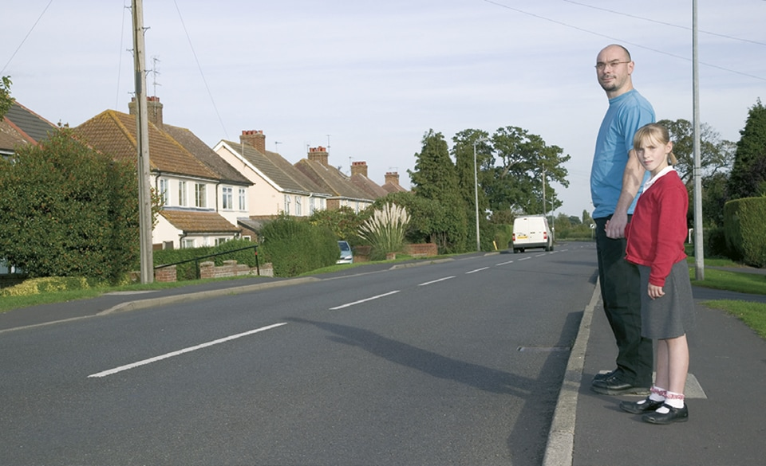

Rules for pedestrians (1 to 35)
- General guidance (1 to 6)
- Crossing the road (7 to 17)
- Crossings (18 to 30)
- Situations needing extra care (31 to 35)
2. Crossing the road (7 to 17)
7
The Green Cross Code. The advice given below on crossing the road is for all pedestrians. Children should be taught the Code and should not be allowed out alone until they can understand and use it properly. The age when they can do this is different for each child. Many children cannot judge how fast vehicles are going or how far away they are. Children learn by example, so parents and carers should always use the Code in full when out with their children. They are responsible for deciding at what age children can use it safely by themselves.
A. First find a safe place to cross and where there is space to reach the pavement on the other side. Where there is a crossing nearby, use it. It is safer to cross using a subway, a footbridge, an island, a zebra, pelican, toucan or puffin crossing, or where there is a crossing point controlled by a police officer, a school crossing patrol or a traffic warden. Otherwise choose a place where you can see clearly in all directions. Try to avoid crossing between parked cars (see Rule 14), on a blind bend, or close to the brow of a hill. Move to a space where drivers and riders can see you clearly. Do not cross the road diagonally.
The Green Cross Code. The advice given below on crossing the road is for all pedestrians. Children should be taught the Code and should not be allowed out alone until they can understand and use it properly. The age when they can do this is different for each child. Many children cannot judge how fast vehicles are going or how far away they are. Children learn by example, so parents and carers should always use the Code in full when out with their children. They are responsible for deciding at what age children can use it safely by themselves.
A. First find a safe place to cross and where there is space to reach the pavement on the other side. Where there is a crossing nearby, use it. It is safer to cross using a subway, a footbridge, an island, a zebra, pelican, toucan or puffin crossing, or where there is a crossing point controlled by a police officer, a school crossing patrol or a traffic warden. Otherwise choose a place where you can see clearly in all directions. Try to avoid crossing between parked cars (see Rule 14), on a blind bend, or close to the brow of a hill. Move to a space where drivers and riders can see you clearly. Do not cross the road diagonally.

Rule 7- Look all around and listen for traffic before crossing
B. Stop just before you get to the kerb, where you can see if anything is coming. Do not get too close to the traffic. If there’s no pavement, keep back from the edge of the road but make sure you can still see approaching traffic.
C. Look all around for traffic and listen. Traffic could come from any direction. Listen as well, because you can sometimes hear traffic before you see it.
D. If traffic is coming, let it pass. Look all around again and listen. Do not cross until there is a safe gap in the traffic and you are certain that there is plenty of time. Remember, even if traffic is a long way off, it may be approaching very quickly.
E. When it is safe, go straight across the road – do not run. Keep looking and listening for traffic while you cross, in case there is any traffic you did not see, or in case other traffic appears suddenly. Look out for cyclists and motorcyclists travelling between lanes of traffic. Do not walk diagonally across the road.
8
At a junction. When you are crossing or waiting to cross the road, other traffic should give way. Look out for traffic turning into the road, especially from behind you, and cross at a place where drivers can see you. If you have started crossing and traffic wants to turn into the road, you have priority and they should give way (see Rules H2 and 170).
9
Pedestrian Safety Barriers. Where there are barriers, cross the road only at the gaps provided for pedestrians. Do not climb over the barriers or walk between them and the road.
10
Tactile paving. Raised surfaces that can be felt underfoot provide warning and guidance to blind or partially sighted people. The most common surfaces are a series of raised studs, which are used at crossing points with a dropped kerb, or a series of rounded raised bars which are used at level crossings, at the top and bottom of steps and at some other hazards.
11
One-way streets. Check which way the traffic is moving. Do not cross until it is safe to do so without stopping. Bus and cycle lanes may operate in the opposite direction to the rest of the traffic.
12
Bus and cycle lanes. Take care when crossing these lanes as traffic may be moving faster than in the other lanes, or against the flow of traffic.
13Routes shared with cyclists. Cycle tracks may run alongside footpaths or pavements and be separated from them by a feature such as a change of material, a verge, a kerb or a white line. Such routes may also incorporate short lengths of tactile paving to help visually impaired people stay on the correct side. On the pedestrian side this may comprise a series of flat-topped bars running across the direction of travel (ladder pattern). On the cyclist side the same bars are orientated in the direction of travel (tramline pattern).
Some routes shared with cyclists will not be separated by such a feature allowing cyclists and pedestrians to share the same space. Cyclists should respect your safety (see Rule 62) but you should also take care not to obstruct or endanger them. Always remain aware of your environment and avoid unnecessary distractions.
Where signs indicate, some routes are shared between pedestrians, cyclists, horse riders and horse drawn vehicles. Cyclists, horse riders and drivers of horse drawn vehicles should respect your safety, but you should take care not to obstruct or endanger them. Always remain aware of your environment and avoid unnecessary distractions.
14
Parked vehicles. If you have to cross between parked vehicles, use the outside edges of the vehicles as if they were the kerb. Stop there and make sure you can see all around and that the traffic can see you. Make sure there is a gap between any parked vehicles on the other side, so you can reach the pavement. Never cross the road in front of, or behind, any vehicle with its engine running, especially a large vehicle, as the driver may not be able to see you.
15
Reversing vehicles. Never cross behind a vehicle which is reversing, showing white reversing lights or sounding a warning.
16
Moving vehicles. You MUST NOT get onto or hold onto a moving vehicle.
Law RTA 1988 sect 26
17
At night. Wear something reflective to make it easier for others to see you (see Rule 3). If there is no pedestrian crossing nearby, cross the road near a street light so that traffic can see you more easily.
C. Look all around for traffic and listen. Traffic could come from any direction. Listen as well, because you can sometimes hear traffic before you see it.
D. If traffic is coming, let it pass. Look all around again and listen. Do not cross until there is a safe gap in the traffic and you are certain that there is plenty of time. Remember, even if traffic is a long way off, it may be approaching very quickly.
E. When it is safe, go straight across the road – do not run. Keep looking and listening for traffic while you cross, in case there is any traffic you did not see, or in case other traffic appears suddenly. Look out for cyclists and motorcyclists travelling between lanes of traffic. Do not walk diagonally across the road.
8
At a junction. When you are crossing or waiting to cross the road, other traffic should give way. Look out for traffic turning into the road, especially from behind you, and cross at a place where drivers can see you. If you have started crossing and traffic wants to turn into the road, you have priority and they should give way (see Rules H2 and 170).
9
Pedestrian Safety Barriers. Where there are barriers, cross the road only at the gaps provided for pedestrians. Do not climb over the barriers or walk between them and the road.
10
Tactile paving. Raised surfaces that can be felt underfoot provide warning and guidance to blind or partially sighted people. The most common surfaces are a series of raised studs, which are used at crossing points with a dropped kerb, or a series of rounded raised bars which are used at level crossings, at the top and bottom of steps and at some other hazards.
11
One-way streets. Check which way the traffic is moving. Do not cross until it is safe to do so without stopping. Bus and cycle lanes may operate in the opposite direction to the rest of the traffic.
12
Bus and cycle lanes. Take care when crossing these lanes as traffic may be moving faster than in the other lanes, or against the flow of traffic.
13Routes shared with cyclists. Cycle tracks may run alongside footpaths or pavements and be separated from them by a feature such as a change of material, a verge, a kerb or a white line. Such routes may also incorporate short lengths of tactile paving to help visually impaired people stay on the correct side. On the pedestrian side this may comprise a series of flat-topped bars running across the direction of travel (ladder pattern). On the cyclist side the same bars are orientated in the direction of travel (tramline pattern).
Some routes shared with cyclists will not be separated by such a feature allowing cyclists and pedestrians to share the same space. Cyclists should respect your safety (see Rule 62) but you should also take care not to obstruct or endanger them. Always remain aware of your environment and avoid unnecessary distractions.
Where signs indicate, some routes are shared between pedestrians, cyclists, horse riders and horse drawn vehicles. Cyclists, horse riders and drivers of horse drawn vehicles should respect your safety, but you should take care not to obstruct or endanger them. Always remain aware of your environment and avoid unnecessary distractions.
14
Parked vehicles. If you have to cross between parked vehicles, use the outside edges of the vehicles as if they were the kerb. Stop there and make sure you can see all around and that the traffic can see you. Make sure there is a gap between any parked vehicles on the other side, so you can reach the pavement. Never cross the road in front of, or behind, any vehicle with its engine running, especially a large vehicle, as the driver may not be able to see you.
15
Reversing vehicles. Never cross behind a vehicle which is reversing, showing white reversing lights or sounding a warning.
16
Moving vehicles. You MUST NOT get onto or hold onto a moving vehicle.
Law RTA 1988 sect 26
17
At night. Wear something reflective to make it easier for others to see you (see Rule 3). If there is no pedestrian crossing nearby, cross the road near a street light so that traffic can see you more easily.